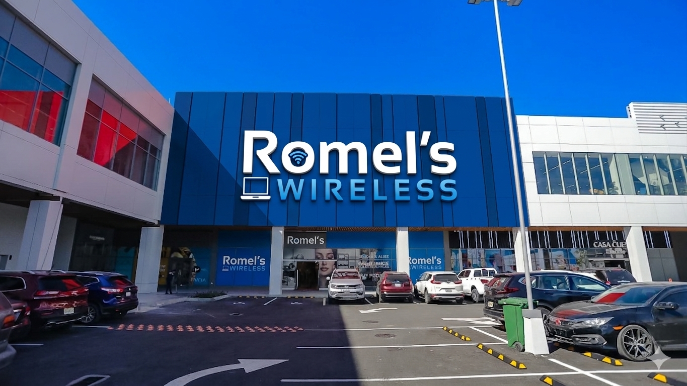

Tecnología confiable con atención cercana y profesional
Romel's Wireless nació en 2021 en San José, Costa Rica, con una misión clara: ofrecer dispositivos de última tecnología junto con un servicio de reparación honesto y profesional. Lo que empezó como un pequeño local se ha convertido en un referente gracias a la confianza de cientos de clientes que valoran no solo comprar un equipo, sino tener respaldo real cuando lo necesitan.

Técnicos certificados con más de 8 años reparando dispositivos de todas las marcas.
Utilizamos repuestos originales o de la más alta calidad para garantizar durabilidad.
Todas nuestras reparaciones tienen garantía de hasta 90 días.
Tratamos cada caso como si fuera nuestro propio dispositivo.
Conectar a las personas con la mejor tecnología y mantener sus dispositivos funcionando como el primer día, con honestidad, rapidez y precios justos.